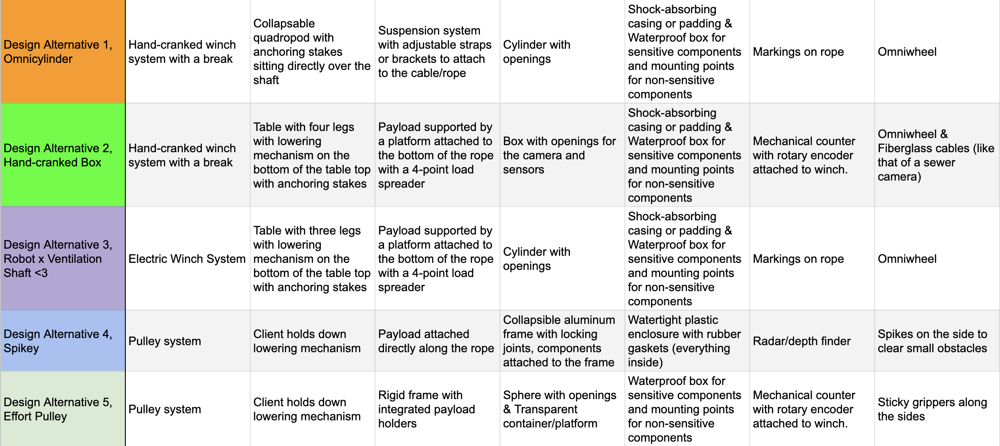

Abyss Explorer
Introduction and Background
Our client owned two mining claims in Utah, aiming to clean them up and protect them from federal land protection reversals. One of these mining claims (active from the 1950s to 1980s) was one of the largest uranium producers in the Red Canyon District.
Since its closure, human exploration has been impossible due to low oxygen levels, high concentrations of radioactive materials, and the risk of structural collapse. Furthermore, at the time of this project, the mine interior was only accessible via two ventilation shafts. One shaft was only 4 inches in diameter, while the other shaft was 24 inches in diameter but narrowed to an unknown diameter further down. Both shafts had potential sudden narrows or shifts, and obstacles within them.
Our client wanted a solution to safely explore the mine interior without sending humans into the hazardous environment. This project’s goal was to design a system to lower a payload filled with various sensors, cameras, and lights to the bottom of the mine, collect data, and return safely. The system needed to correctly report the depth of the payload at all times. It also needed to be lightweight and portable, as the client would be driving to the mine site in a 2019 Subaru Crosstrek with limited cargo space, and hiking up to the mine shaft with the system.
Problem Framing
Through interviewing the client, my team reframed the problem to focus on the key challenges and requirements for the design.
Problem Statement
This revised problem statement concisely defines the project scope and eliminated errors, biases, and implied solutions.
“The client is trying to explore an old mine site. However, the interior of the mine is hostile to human entry. The main section of the mine can only be accessed through a narrow ventilation shaft that gets smaller during descent from 24 inches to an unknown diameter. The client needs a way to lower a variety of sensors, cameras, and lights into the mine’s interior through the shaft to determine the inside nature of the cave and its environmental conditions while monitoring their depth in real time, as well as retrieve them without damage.”
Functions
Functions are capabilities that the design must perform to meet the client’s needs. The following are the constraints for the design:
- Raise and lower a platform
- Support the lowering mechanism and payload
- Protect the client’s hardware
- Navigate potential obstacles
- Convey the depth of the payload
Objectives
An objective is a property of the design that has a preferred or target direction. The following are the objectives for the design:
- Minimize the horizontal area of the payload
- Minimize the weight of the device (payload and lowering mechanism)
- Minimize the device’s volumetric footprint while being transported
- Maximize precision of depth tracking
- Maximize the reusability of the device
- Minimize environmental contaminants sticking to the payload
Constraints
A constraint is a requirement that the design must fully satisfy, or else it is unacceptable. The following are the constraints for the design:
- Must fit within half the space of a 2019 Subaru Crosstrek for transport and be light and compact enough to take only one trip to carry up to the shaft with at most two people
- Must hold a sensor payload that fits within an 8-inch diameter and potentially hazardous environment
- Must descend to at least 600 ft down.
- Must have a vertical speed of at least 1 ft/s and provide control over ascent and descent at all times by being able to hold its position and resume movement at any point
Ideating and Selecting Alternative Solutions
Prioritizing Objectives
The team used a pairwise comparison chart to rank the priority of each objective.

From Figure 1, the prioritized order of objectives is as follows:
- Minimize the horizontal area of the payload
- Minimize the weight of the device (payload and lowering mechanism)
- Minimize the device’s volumetric footprint while being transported
- Maximize precision of depth tracking
- Maximize the reusability of the device
- Minimize environmental contaminants sticking to the payload
Objective 1 outranked the other objectives since a smaller top-down area footprint would increase the likelihood of the payload completely making it down the shaft, given the unknown smallest diameter and potential obstacles. Objective 2 ranked second, since the client is operating on a tight schedule of one day and needs to get the device up to the shaft in one trip to run it through the shaft multiple times. Objective 3 ranked third, because the client has limited space in his car to transport both teams’ devices, and the dimensions of the other team’s design are unknown, so minimizing the volumetric footprint would increase the client’s chances of getting the device to the site. Objective 4 ranked fourth, since the client specified he wanted to know the depth of the payload to an ideal, but not necessary, precision of 1ft. Objective 5 was placed above objective 6 as the client expects to lower and raise the payload through the full length of the shaft at least five times, and as long as the attempts are made on the same day, he will only remove contaminants once at the end of trials.
Possible Solutions to the Functions
Various means were generated as possibilities to fulfill each function. These means were organized through a morphological chart. Note: the functions listed in Figure 2 are slightly different from the functions listed earlier, as they were refined during later stages of the design process. The functions as described earlier combine and clarify some of the functions listed here.

In Figure 2, Function 1 refers to what would allow the lowering mechanism to shorten or lengthen the rope attached to a platform. Function 2 refers to what would prevent the lowering mechanism from falling into the ventilation shaft or falling on its side, considering forces applied from the client and means for function 1. Function 3 refers to how the payload would be attached to the hypothetical rope. Function 4 refers to how the payload should be constructed to allow the sensors to operate, including the shape and structure of the payload. Function 5 refers to how the components could be shielded or cushioned from the harsh environment and obstacles. Function 6 refers to how the client will tell how deep the payload has gone into the shaft. Function 7 refers to how the payload would avoid, move around, or destroy obstacles within the shaft.
Design Alternatives
From the morphological chart, five design alternatives were developed as outlined in Figure 3.
